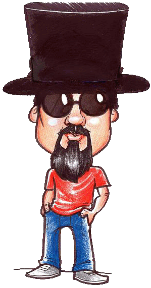

| |
Dino Chaves – Vocalista e Guitarrista
Dino Chaves é vocalista, guitarrista, compositor e emérito fundador
da banda de rock Saída de Emergência. Um cara objetivo e sistemático. Admira as obras de Raul Seixas, Cazuza, Rage Against The Machine e Gentle Giant, além de ser fã dos arretados Luiz Gonzaga e Jackson do Pandeiro, principalmente pela autenticidade de ambos.
Como compositor Dino mantém suas harmonias e melodias simples e marcantes, sempre com mensagens filosóficas em suas letras, na maioria das vezes baseadas em fatos reais. “Não abro mão da parte política social, religiosa e cotidiana, sempre na contra mão da música comercial. Na minha visão o rock é uma forma de contestar musicalmente algumas injustiças sociais”, afirma Dino Chaves. Seus valores fundamentais para todo trabalho são dois: honestidade e autenticidade. E isso fica evidente no som da banda, que preza pela originalidade sempre.
Em questão de sabedoria Dino afirma: “O maior artista de todos os tempos é o tempo.”
Instrumentos: Guitarra Fender Telecaster e Violão Fender
Amplificador: Mesa Boogie DC-3/Foot-Switch |
Danilo Godoy - Guitarrista
Danilo Godoy é o mais novo integrante do Saída de Emergência em
todos os sentidos: acaba de ingressar no grupo e tem apenas 29 anos
de idade. Graças a ele o som da banda ganhou peso, também em todos
os sentidos. Algumas das influências de Danilo incluem Zakk Wylde,
Killswitch Engage, Pearl Jam, Alice in Chains, Metallica e
Nickelback.
Lembremos
que “novo” não significa necessariamente “inexperiente”, pois Danilo
demonstra extrema segurança e criatividade, já tendo inclusive
ministrado aulas de música antes de entrar para a banda. “Estou
passando pela melhor fase de minha vida, pois encontrei no SDE um
som muito autêntico e descontraído”’, diz Danilo. “Há mais de duas
décadas não vejo e nem ouço no cenário musical nacional o que
estamos fazendo. Agora é hora de cair na estrada e tocar muito Rock
‘n’ Roll!”, finaliza.
Instrumentos: Guitarra Fender Stratocaster
Amplificador: JCM 2000 Marshall
Pedais: V-Twin Mesa Boogie/Digital Delay - Boss
|

Lok’s Rasmussen - Baterista
Lok’s Rasmussen é o mais bem humorado dos membros da banda Saída
de Emergência. Possui influências musicais diversificadas,
passando principalmente pelo rock progressivo e o hard rock
setentista. Led Zeppelin é sua principal referência no rock ‘n’
roll.
Músico experiente com mais de 15 anos de estrada, trabalhou com
várias bandas de rock como o Raiz Quadrada, Skin Noises e o
Mystical Warning. Atualmente, paralelo ao trabalho do Saída de
Emergência Lok’s toca na banda de baile Santa Fé e na de hard rock
Pop Javali, ambas de Americana/SP.
Autor de frases marcantes e de efeito como “O menos é mais”, “O
importante é o principal” , esta última dá titulo ao disco, e “O que
é isso doutor?”, entrou para o SDE há 8 anos.
Músico competente, seguro e eficaz. Resumindo, 100% rock ‘n’ roll,
John Bonhan e tudo mais. “Garanto estar preparado para qualquer
desafio musical, é o que mais gosto inclusive”, conclui Lok`s.
Instrumentos: Bateria Yamaha Recording Custom
Pratos Sabian 10/12/14/16/18/21
|
Lelo Carvalho - Contrabaixista
“Lelo” Carvalho é contrabaixista e compositor da banda Saída de
Emergência. Suas principais influências musicais são Rolling Stones,
Beatles e bandas dos anos 70 como Led Zeppelin e Black Sabbath. Seu
estilo de tocar é totalmente setentista.
Biriteiro profissional, degustador de água...rdentes. Fiscal da
natureza por gratidão a ela e seu lema é: Sombra, água fresca e
deixa a vida me levar.
Instrumento: Baixo Fender Jazz Bazz
Amplificador: Ampeg
|
|
|